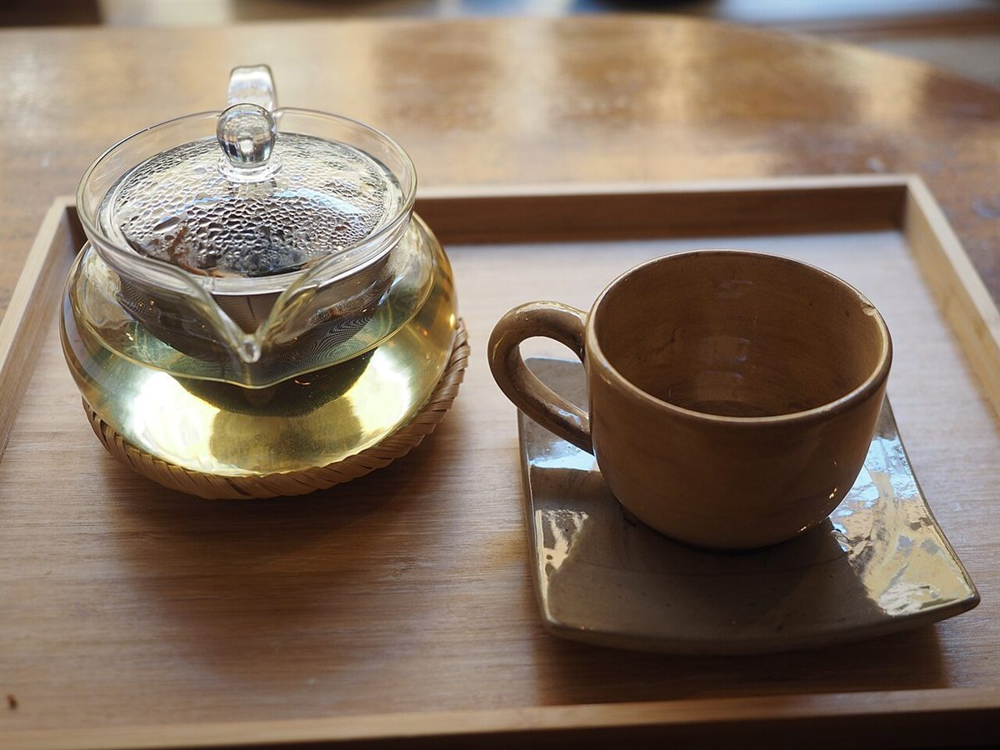
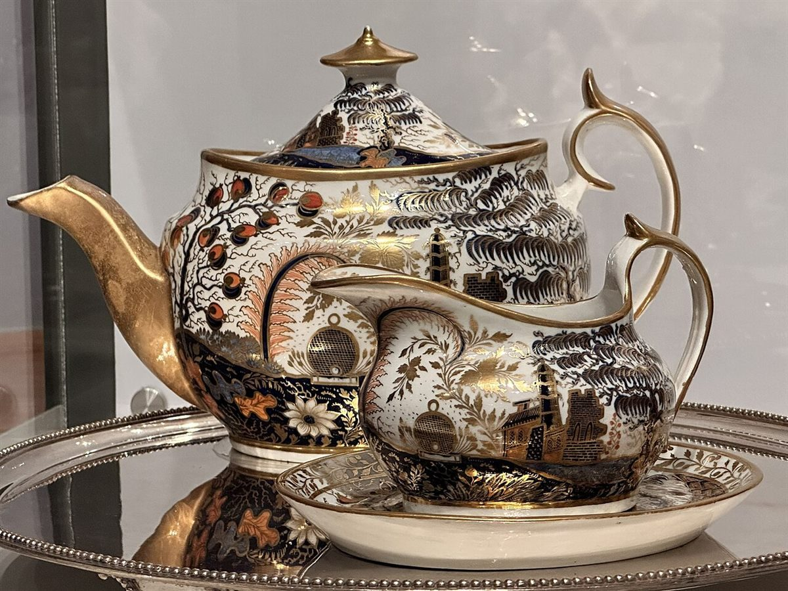
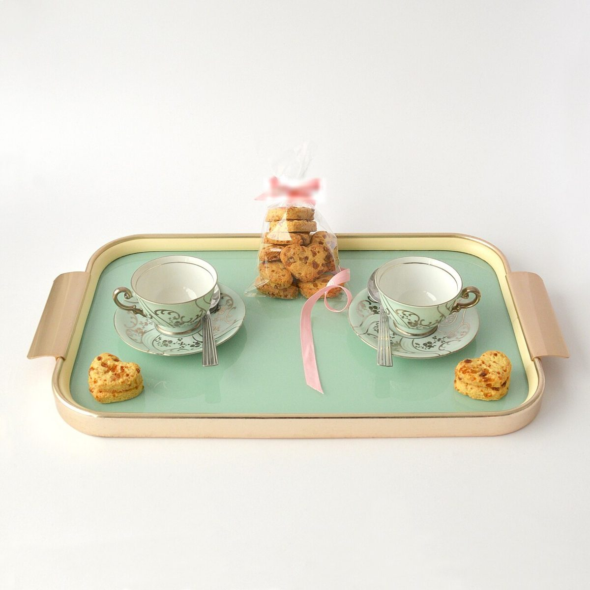

メ
ニ
ュ
ー
ニ
ュ
ー
二の段
メニュー
メニューと価格は準備中です。確認でき次第、こちらに掲載します。
確認メニュー・価格
| メニュー | 準備中 |
|---|---|
| 価格 | 準備中 |
| ご予約 | 準備中 |
参考テーブルまわりのイメージ写真
下の写真は雰囲気を伝えるためのフリー素材で、お店で提供しているものではありません。提供メニューを示すものでもありません。






二の段
メニューと価格は準備中です。確認でき次第、こちらに掲載します。
| メニュー | 準備中 |
|---|---|
| 価格 | 準備中 |
| ご予約 | 準備中 |
下の写真は雰囲気を伝えるためのフリー素材で、お店で提供しているものではありません。提供メニューを示すものでもありません。


